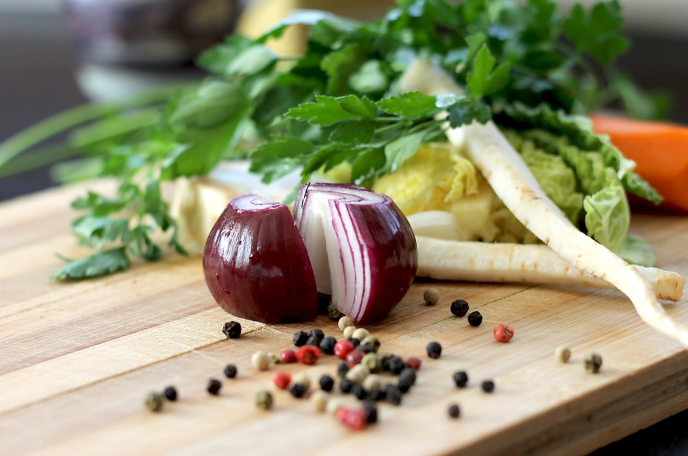
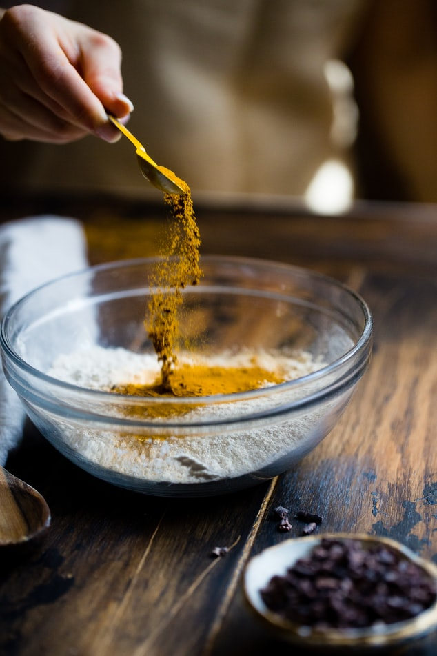

Even with a gorgeous new cookbook (ahem) prettying up your kitchen, cracking it open and putting it to use can be intimidating. But here’s the thing: It doesn’t matter if the end result doesn’t look like the picture. You don’t need a pantry full of spices you’ve never heard of and you definitely don’t need to dirty half a dozen pots and pans to make good food that’s nourishing for your body and soul. 
Probably the most obvious benefit of cooking your own food is that you know exactly what you’re putting in your body. “This can be vital for people with food allergies, intolerances, or other dietary restrictions,” says Kara Lydon, RD, LDN, RYT, owner of Kara Lydon Nutrition and author of Nourish Your Namaste. That means skipping playing 21 questions with your waiter or triple-checking the ingredients list on every packaged snack in your grocery cart for gluten.
According to scientific studies, people eat more mindful portions when they make their own food. “At restaurants, we can’t control the portions that are served to us and more often than not, they are larger than what we might serve at home,” Lydon says. “If you struggle with that desire to clean your plate, you might find that you’re uncomfortably full after a meal out versus eating at home where you can serve a portion that will help you reach a comfortable level of fullness.”
“Eating at home often comes with fewer distractions and thus a greater ability to turn inward to check with your satiety and satisfaction cues to know when to stop eating,” Lydon says. Yet another reason why it discourages overeating.
One study found that French adults who cooked at home ate a greater variety of foods than those who primarily ate out. As any RD will tell you, having a varied diet results in eating a greater range of nutrients (because no one food contains everything you need!) and can lead to overall better health.